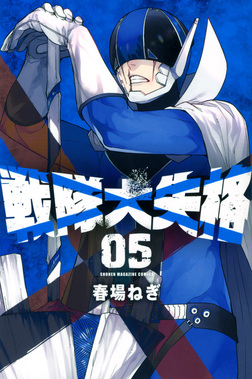
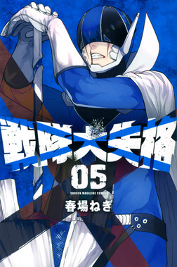

戦隊大失格
作者:春場ねぎ
 白聖女と
白聖女と黒牧師
あらすじ
13年前、突如現れた巨大浮遊城。 竜神戦隊ドラゴンキーパー（通称・大戦隊）と悪の怪人軍団が繰り広げている13年間の死闘は、やらせの茶番劇だった。 とうの昔に浮遊城は陥落状態、怪人幹部も全滅、残された下っ端戦闘員ダスダースは 大戦隊に秘密の協定＜毎週末、地上に侵攻し敗れ散る＞を極秘に結ばされる結末。 そんな隷従させられ続ける日々から脱出して反旗を翻すべく、戦闘員Dは大戦隊に潜入するのであった。 大戦隊を倒すことを目的として、戦闘員Dは人間に擬態して組織に潜入する。 錫切夢子の力も借りながら、朱鷺田隼やレッドキーパー・赤刎 創星（あかばね そうせい）を欺き、赤の神具の奪取に成功する。 その後、偵察しに来た碧流亜乱と対峙してしまうが、桜間日々輝と協力して「入れ替わり作戦」を実行し、またも敵を欺く。 以降、戦闘員Dは「潰す」ことを目的に桜間に成り代わり大戦隊に潜入する。桜間日々輝は「正す」ことを目的に大戦隊を離れる。 この戦いを経て戦友となった2人だったが、互いの絆の力を胸に、別々の道を歩み始めるのであった。 しかし、戦隊本部の戦闘員たちは曲者揃いだった。果たしてDは運命を変えることができるのか！？
単行本 現14巻